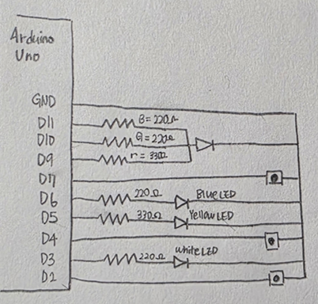
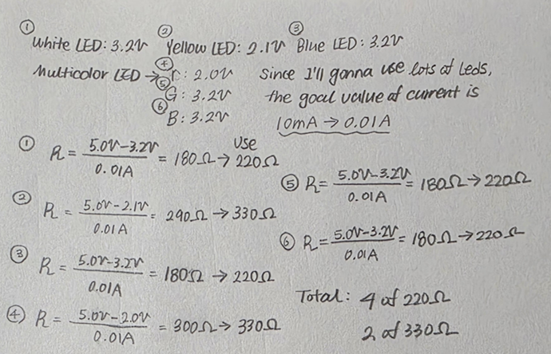
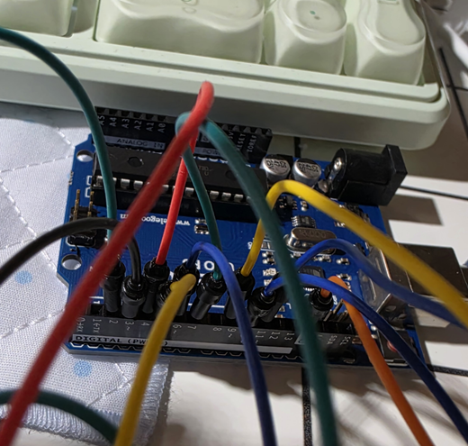
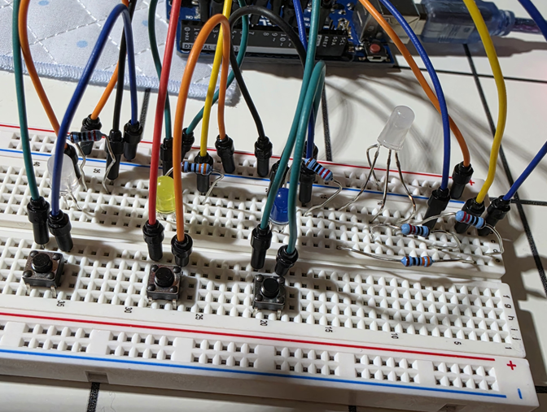
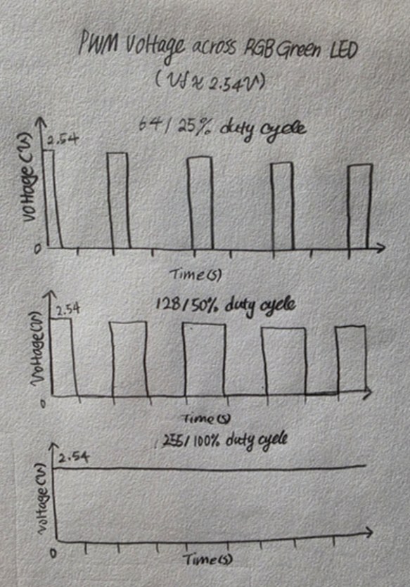
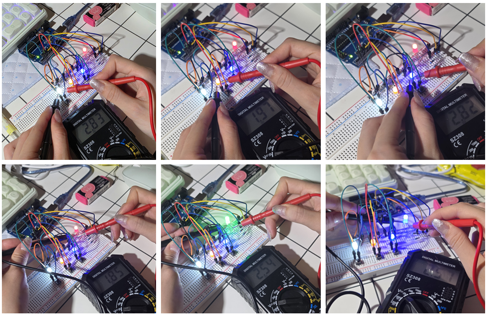

HCDE 439 - Physical Computing | Bomyung Lee | 10.18.26
An Interactive Memory Game Using LEDs and Push Buttons
For this assignment, I designed a simple memory game using an Arduino Uno, three individual LEDs, three push buttons, and one RGB LED.
The idea was to create a game where the Arduino randomly generates a sequence of lights, and the player has to remember and repeat the same sequence using buttons. I wanted to make something that was interactive rather than just having LEDs turn on and off automatically. By combining visual outputs with button inputs, I could create a simple game that responds to the player's actions. The game uses three LEDs: white, yellow, and blue. Each LED has a corresponding push button. The RGB LED provides feedback depending on whether the player remembers the sequence correctly.
| Stage | LED Behavior | Player Interaction |
|---|---|---|
| Start | Arduino generates a random sequence | Wait for the pattern |
| Show Sequence | Three LEDs light up one at a time | Memorize the order |
| Player Input | The corresponding LED lights up when a button is pressed | Repeat the sequence |
| Correct Answer | RGB LED fades in and out in green | Successful round |
| Incorrect Answer | RGB LED lights up in red | Unsuccessful round |
| Restart | A new random sequence is generated | Try again |
My goal was to create a simple interactive toy that combines memory, visual feedback, and physical interaction.
I chose a memory game because I thought the basic algorithm would be manageable with the Arduino concepts I had learned so far. The game only needs to generate a sequence, display it, read the player's input, and compare the two sequences. I also wanted to use an RGB LED for feedback instead of adding separate red and green LEDs. This allowed me to experiment with a multicolor LED and use different colors to communicate the result of the game.
For a correct answer, I decided to make the green LED
gradually brighten and fade using analogWrite().
For an incorrect answer, the red LED turns on briefly.
I thought this would make the feedback easy to recognize.

I connected each LED to its own digital output pin
so that the Arduino could control the lights independently.
The three push buttons are connected to separate input pins.
I used INPUT_PULLUP, which allows the buttons
to work without additional external resistors. When a button
is pressed, its input reads LOW. The RGB LED is a
common-cathode LED, so its common pin is connected to ground.
Each color channel has its own current-limiting resistor.
| Component | Arduino Pin | Resistor |
|---|---|---|
| White LED | 3 | 220 ohms |
| Yellow LED | 5 | 330 ohms |
| Blue LED | 6 | 220 ohms |
| Button 1 (White) | 2 | Internal pull-up |
| Button 2 (Yellow) | 4 | Internal pull-up |
| Button 3 (Blue) | 7 | Internal pull-up |
| RGB Red | 9 | 330 ohms |
| RGB Green | 10 | 220 ohms |
| RGB Blue | 11 | 220 ohms |
| RGB Common Cathode | GND | N/A |
For the three push buttons, I used Arduino's built-in
INPUT_PULLUP resistors instead of adding
external resistors. The internal pull-up resistors keep
the input pins HIGH when the buttons are not pressed.
When a button is pressed, the pin is connected to
ground and reads LOW.
According to the Arduino Uno's ATmega328P specifications, the internal pull-up resistance is approximately 20-50 kΩ. Using Ohm's Law, the estimated current when a button is pressed is:
I = V / R
At 20 kΩ:
I = 5V / 20,000Ω = 0.25mA
At 50 kΩ:
I = 5V / 50,000Ω = 0.10mA
Therefore, the current through each pressed button
is approximately 0.10-0.25mA.
I chose to use INPUT_PULLUP because it
simplifies the circuit, reduces the number of external
components, and limits the current through the buttons.
Before building the circuit, I calculated the resistor values needed to limit the current flowing through each LED. I used a 5V output and a target current of approximately 10mA (0.01A) for each LED channel. The forward voltages used in these calculations are estimated values based on typical LED colors.
Kirchhoff's Voltage Law:
5V = V(resistor) + V(LED)
Ohm's Law:
R = (V(source) - V(forward)) / I
Forward voltage: approximately 3.2V
Target current: 0.01A
R = (5 - 3.2) / 0.01
R = 180 ohms
I selected a 220-ohm resistor.
Expected current:
I = (5 - 3.2) / 220
I ≈ 8.18mA
Forward voltage: approximately 2.1V
Target current: 0.01A
R = (5 - 2.1) / 0.01
R = 290 ohms
I selected a 330-ohm resistor.
Expected current:
I = (5 - 2.1) / 330
I ≈ 8.79mA
Forward voltage: approximately 3.2V
Target current: 0.01A
R = (5 - 3.2) / 0.01
R = 180 ohms
I selected a 220-ohm resistor.
Expected current: I ≈ 8.18mA
Because the RGB LED contains three separate color channels, I used an individual resistor for each channel.
Red channel
Forward voltage: approximately 2.0V
R = (5 - 2.0) / 0.01 = 300 ohms
Selected resistor: 330 ohms
Expected current: 9.09mA
Green channel
Forward voltage: approximately 3.2V
R = (5 - 3.2) / 0.01 = 180 ohms
Selected resistor: 220 ohms
Expected current: 8.18mA
Blue channel
Forward voltage: approximately 3.2V
R = (5 - 3.2) / 0.01 = 180 ohms
Selected resistor: 220 ohms
Expected current: 8.18mA
| LED | Calculated Resistance | Actual Resistor |
|---|---|---|
| White | 180 ohms | 220 ohms |
| Yellow | 290 ohms | 330 ohms |
| Blue | 180 ohms | 220 ohms |
| RGB Red | 300 ohms | 330 ohms |
| RGB Green | 180 ohms | 220 ohms |
| RGB Blue | 180 ohms | 220 ohms |

Calculating the resistor values was relatively straightforward because I had already practiced using Ohm's Law in previous assignments. However, this circuit required more resistors than my previous project because I was using three individual LEDs and three channels of an RGB LED. I also learned that even though an RGB LED is physically one component, its red, green, and blue channels need to be considered separately when calculating resistance. The expected current values are theoretical estimates. Actual current may vary depending on the LED's real forward voltage and the Arduino's output voltage.
After completing the schematic and resistor calculations, I assembled the circuit using an Arduino Uno, a breadboard, three individual LEDs, three push buttons, one RGB LED, resistors, and jumper wires.


Unlike my previous assignment, the most difficult part of this project was not the programming. It was arranging all the components on the breadboard. Since I had to use multiple LEDs, buttons, resistors, and jumper wires, I spent a lot of time thinking about how to fit everything onto the breadboard while keeping the connections organized. The individual LEDs and push buttons were relatively easy to connect. I tested each component separately before moving on to the next one, which helped me identify problems more easily. However, the RGB LED was much more challenging than I expected.
I programmed the Arduino to generate a random sequence of three LED colors and compare it with the player's button inputs. The program follows a simple process: generate a sequence, display the pattern, wait for the player's input, compare the answers, and show the result.
INPUT_PULLUP.
Compared to my previous assignment, I felt more comfortable working with the Arduino code. I was able to understand and work through much of the game's algorithm because the overall logic was not very complicated. I needed to generate a sequence, display it, collect three button inputs, and compare them with the original sequence. I used ChatGPT to help develop and review the code, but I was also able to follow the logic and understand how the different parts worked together. There were still some issues during development, and I had to make corrections along the way. Rather than only changing the code to make it work, I tried to understand why something was not working and what needed to change. This helped me become more comfortable with debugging. I learned that identifying the cause of an error is just as important as fixing it.
One thing I learned through ChatGPT was how Arduino generates
random numbers. Before this assignment, I did not know how
to randomly select one of several LEDs. ChatGPT introduced
me to the random() function and explained how
it could be combined with an array. For example,
random(0, 3) generates one of three possible
values: 0, 1, or 2. Each number corresponds to one LED in
my array. I also learned about randomSeed(),
which helps vary the sequence of random numbers when
the Arduino restarts. Once I understood this concept,
the rest of the game's logic became much easier
to follow.
The most frustrating part of this assignment was definitely wiring the RGB LED. Since it had four pins, I first needed to identify which pin controlled which color and which pin was the common connection. I even used a multimeter to test the RGB LED and figure out the individual color channels before connecting it to the circuit.
I thought this would make the wiring process easier, but I somehow managed to connect the pins incorrectly anyway. At one point, the game displayed blue instead of red when the player entered an incorrect answer. I initially thought something was wrong with the code, but the problem was actually the physical wiring. I had to rearrange the RGB LED connections around four or five times before everything finally worked correctly. It was a little ridiculous because I had already spent time identifying the pins with a multimeter, only to make mistakes while wiring them.
After I corrected the connections so that pin 9 controlled red, pin 10 controlled green, and pin 11 controlled blue, the RGB LED worked as expected. Once that issue was solved, the rest of the project went much more smoothly. This experience taught me that even if the code and schematic are correct, the physical circuit can still behave differently because of a simple wiring mistake. I also realized how important it is to test each component individually instead of trying to troubleshoot the entire circuit at once.
The current version of the game uses a sequence of three LEDs. While this makes the game easy to understand and play, the difficulty stays the same for every round. In the future, I would like to make the game more challenging by increasing the sequence length whenever the player gets the answer correct. I could also use the blue channel of the RGB LED to create an additional animation when the game starts.
Another limitation is that the program uses delay()
to control the timing of the LED sequence. Although this makes
the code easier to write, the Arduino cannot respond to new
button inputs during those delays. >For this assignment,
I decided to keep the code simple because I wanted to focus
on understanding the basic interactions between the buttons
and LEDs.

When the game starts, the Arduino randomly selects three LED colors and displays them one at a time. After the sequence finishes, the player presses the three buttons in the same order. Each button activates its corresponding LED, providing immediate visual feedback. Once the player has entered all three inputs, the Arduino compares them with the original sequence. If the player enters the correct sequence, the RGB LED gradually fades in and out in green. If the sequence is incorrect, the RGB LED turns red. After a short pause, the game generates a new random sequence and starts another round.
Arduino uses Pulse Width Modulation (PWM) to simulate different brightness levels.
Instead of continuously changing the voltage, PWM switches the output between HIGH and LOW very quickly. The duty cycle determines the proportion of time the output remains HIGH.
For an 8-bit PWM output, the approximate duty cycle is calculated as:
Duty Cycle = analogWrite Value / 255 × 100%
| analogWrite() Value | Approximate Duty Cycle | Expected Brightness |
|---|---|---|
| 64 | 25% | Low |
| 128 | 50% | Medium |
| 255 | 100% | Maximum |

At a value of 64, the LED receives pulses with an approximately 25% duty cycle. At 128, the duty cycle is approximately 50%. At 255, the output remains HIGH. Based on my measurement, the voltage across the green LED is approximately 2.54V when it is on and 0V when it is off. This is how I created the green fading effect. By gradually increasing and decreasing the PWM value, I could change the LED's apparent brightness without using an additional component.
To estimate the current required by the LEDs, I used the expected current values from my resistor calculations.
If all six LED channels were illuminated simultaneously at full brightness, the theoretical total LED current would be:
8.18 + 8.79 + 8.18 + 9.09 + 8.18 + 8.18
Total LED current ≈ 50.60mA
This represents a theoretical maximum for the six LED channels under the assumed forward voltages, not the normal current draw of the game. The actual game usually illuminates only one game LED at a time, and the RGB LED is used mainly to show the result.
For a simplified battery-life calculation using a 1200mAh battery:
Battery Life = Battery Capacity / Current
1200mAh / 50.60mA ≈ 23.7 hours
However, this is only an idealized calculation based on the LED current. It does not include the Arduino Uno's own power consumption, voltage regulation losses, or other factors. Therefore, the actual battery life would be shorter and would need to be calculated using the measured total circuit current. I would also need to consider the Arduino's individual pin and overall current limits before trying to illuminate all six LED channels simultaneously.
For the resistor calculations, I used estimated forward voltages:
| LED Color | Estimated Forward Voltage | Measured Forward Voltage | Difference |
|---|---|---|---|
| White | 3.2V | 2.83V | -0.37V |
| Yellow | 2.1V | 1.97V | -0.13V |
| Blue | 3.2V | 2.82V | -0.38V |
| RGB Red | 2.0V | 1.85V | -0.15V |
| RGB Green | 3.2V | 2.54V | -0.66V |
| RGB Blue | 3.2V | 2.72V | -0.48V |

The theoretical forward voltages are approximate values, and actual LEDs may have slightly different voltage drops depending on their characteristics and operating current. By measuring the voltage across each LED while it is illuminated, I can compare the actual forward voltage with the estimated values used in my calculations.
All six measured forward voltages were lower than the estimated values used in my resistor calculations. The largest difference was the RGB green channel, which measured 2.54V compared with the estimated 3.2V, a difference of 0.66V. The RGB blue channel measured 2.72V, which was 0.48V below the estimated value. This showed me that typical forward voltage values are useful for planning a circuit, but actual components can behave differently.
Using the measured forward voltages, a nominal 5V supply, and the installed resistor values, I can estimate the current through each channel using I = (5V - measured forward voltage) / resistance. These are calculated estimates rather than direct current measurements.
| LED Channel | Resistor | Estimated Current Using Measured Voltage |
|---|---|---|
| White | 220 ohms | 9.86mA |
| Yellow | 330 ohms | 9.18mA |
| Blue | 220 ohms | 9.91mA |
| RGB Red | 330 ohms | 9.55mA |
| RGB Green | 220 ohms | 11.18mA |
| RGB Blue | 220 ohms | 10.36mA |
The total estimated LED current with all six channels fully on is approximately 58.03mA, assuming the output pins supply 5V. This does not include the Arduino board current. The earlier 50.60mA estimate and its idealized battery-life calculation were based on the original theoretical forward voltages.
Yes. I used ChatGPT as a learning, programming, debugging, and documentation assistant throughout this assignment. Compared to my previous assignment, I felt more confident understanding the programming logic. The overall algorithm for the memory game was relatively straightforward, and I could understand how the sequence generation, button inputs, and answer comparison worked. I used ChatGPT to help develop and review the Arduino code, especially when I needed to understand unfamiliar functions or troubleshoot problems.
One of the most useful things I learned through ChatGPT was
how to use random() and randomSeed()
to generate a different LED sequence for each round. ChatGPT
also helped me check resistor calculations, organize the
pin connections, test individual components, and structure
the final documentation.
However, I still needed to build the physical circuit, test the components, identify the wiring mistakes, and verify that the program behaved as expected.
I found AI especially useful for learning new programming concepts and understanding why certain changes were needed. Instead of only looking for a working solution, I tried to understand the reason behind each correction. This made debugging feel more like a learning process. At the same time, this assignment showed me that AI cannot replace physical testing. Even when the code appeared correct, the RGB LED did not display the expected colors because I had connected the wires incorrectly. The problem was not something that could be solved by changing the algorithm alone. I had to examine the circuit, check the actual LED colors, and correct the connections myself.
Overall, I felt more confident with programming in this assignment, but I also learned that physical circuit organization and careful wiring are equally important.